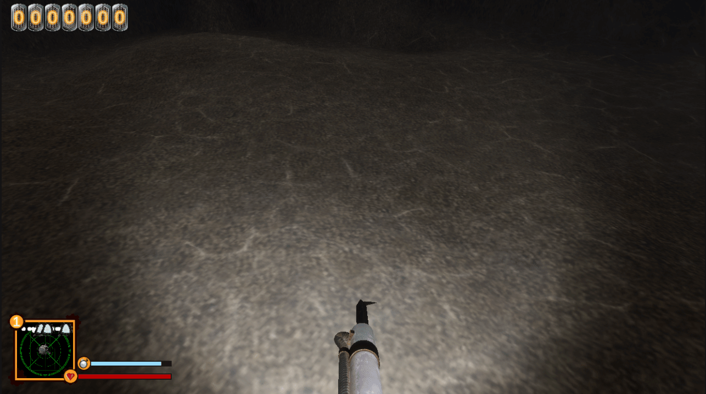
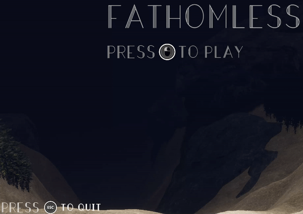

Fathomless is an immersive and spine-chilling deep-sea horror game that pushes players to their limits as they explore the dark and treacherous depths of the ocean. Test your courage, grit, and will as you pilot a submarine through the depths of an unexplored ocean trench. Will you discover what lies in the darkness?
Development happened over two 3 month sprints in which the first was done during a capstone class and the second during a class specifically geared toward bring the game up to a level where it would be ready for pax. I joined the development during this second sprint in an attempt to help bring the game to pax and it required me to take some time to figure out how the game currently worked while also trying to help figure out what needed to be changed to make the game a better experence for the player.
The first change I contributed to the game was to upgrade our unity version to 2022.3.4 to allow for us to use the new Unity water system to inhance the "Underwater" feeling via the caustics it provides and its custom under water shader that controls how far you can see and how lights behave in the water
The second major change I made was to change the game over to the new unity input system to take advantage of the input actions to make supporting Controllers and changing control schemes easier; paired with that was a system to swap the on screen control hints to match the current controler in use wether it be keyboard and mouse, Xbox, or Playstation
there were also a number of other changes I made however some of them didn't end up making it into the game due to time constraints caused by bugs made via technical debt such as my revision to the movement mechanics that would have made the underwater movement feel more natural while still preserving the movement feel inside the sub being broken due to a misunderstanding that both myself and another programmer had about the components and their interactions with the Sub and the player in the game. We ended up creating a workaround to fix it in the interim but eventually we ended up figuring out what was wrong however at that point, it was too late to go back and put back in the new movement mechanics before our deadline of pax. while it didn't ruin the game, it would have been better if it made it in, but it did provide a learning opportunity that reinforced that when in development there will be things that you can't expect to happen perfectly and there will need to be cuts to make a deadline